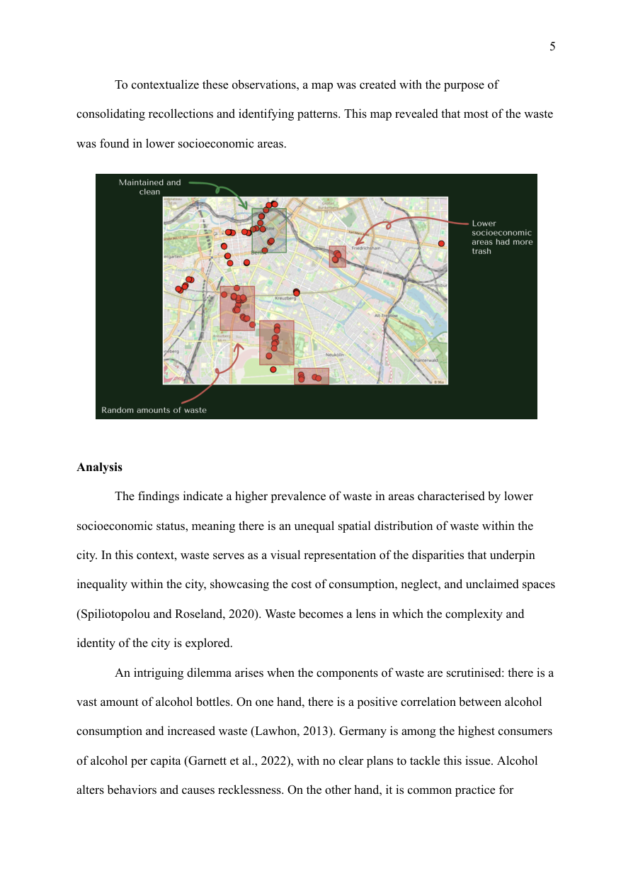

PROYECTO 05 · INVESTIGACIÓN DE CAMPO
Residuos, desigualdad
y reutilización urbana.
Investigación etnográfica sobre gestión de residuos, desigualdad social y reutilización de espacios y materiales en Berlín.
Investigación Etnográfica, Sostenibilidad, Reutilización Urbana
Observaciones de campo, fotografías y entrevistas informales.
01Investigación académica
02La pregunta de investigación
¿Qué impacto tienen las desigualdades sociales en la gestión de residuos en Berlín? Dentro de un proyecto grupal sobre sostenibilidad e identidad urbana, mi investigación individual se centró en cómo se perciben, se hacen visibles y se reutilizan los residuos.
03Mi contribución
- Observación de campo y recopilación de evidencia fotográfica.
- Entrevistas informales, observaciones y revisión de literatura.
- Elaboración de un mapa para organizar observaciones y explorar patrones espaciales.
- Ensayo individual y reflexión sobre la experiencia.
- Contribución a la metodología de la presentación grupal.
04Enfoque
Comparé evidencia de Tempelhof, Kreuzberg, Museum Island y el área de Suicide Circus. La triangulación de observaciones, fotografías y entrevistas permitió considerar interpretaciones diferentes. Organicé el análisis en tres temas: percepciones de los residuos, visibilidad y reutilización, apoyados en literatura sobre metabolismo urbano y espacios recuperados.
05Observaciones exploratorias
Las diferencias observadas entre lugares plantearon preguntas sobre desigualdad, mantenimiento y valor atribuido a los espacios. Las botellas descartadas podían interpretarse como basura o como un recurso económico; las iniciativas comunitarias de Tempelhof mostraron nuevas funciones para materiales y espacios.
06Ética y límites
El ensayo registra consentimiento informado para entrevistas y fotografías de personas o sus pertenencias. Se priorizó el transporte público y un uso limitado de papel.
El trabajo de campo duró una semana y se limitó a lugares seleccionados. Sus interpretaciones son exploratorias, no una encuesta representativa ni prueba de causalidad. La observación por sí sola no establece presupuestos de limpieza ni distribución de recursos en toda la ciudad.
07Reflexión
Desarrollé competencias de investigación cualitativa, síntesis de evidencia y colaboración. El intercambio con compañeros que estudiaban alimentación, moda y espacios amplió el análisis. Identifiqué la importancia de preparar la literatura antes, equilibrar responsabilidades individuales y grupales y adaptar métodos con apoyo de la supervisión.
MATERIALES DEL PROYECTO
Consultar la evidencia de campo
Páginas seleccionadas del ensayo con metodología, mapa de observaciones y análisis.
Documento original en inglés. La vista previa conserva el idioma del material de origen.

